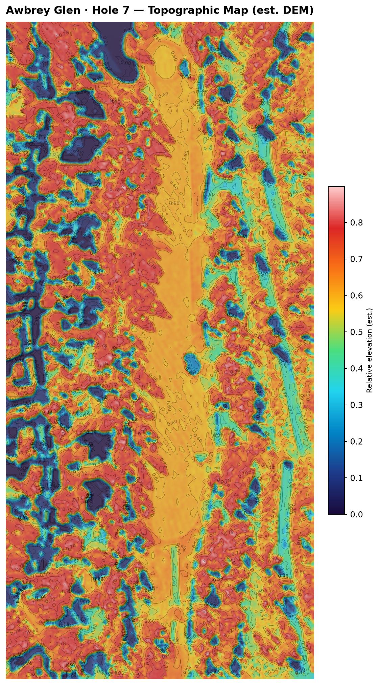

AWBREY GLEN · HOLE 7
Par 4 · 404–314 yds · Downhill · 2D topographic map
Par 4 · 404–314 yds · Downhill · 2D topographic map

Classic topographic sheet for Hole 7. Cooler/darker relief is lower; warmer/brighter is higher. Contours are estimated from imagery (not survey-grade LiDAR).